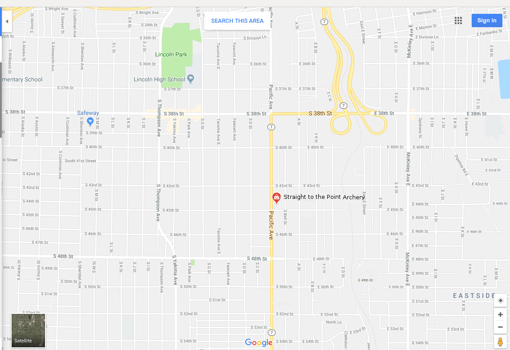

About Us
Location: 528 Nock Point Ln Tacoma, WA 98412
Contact us: By phone - (253)555-1010 By email
Straight to the Point Archery is a non profit archery education center founded in 2005 by Giap Nguyen. Our state of the art educational and training facility incorporates detailed technical video analysis combined with generations of archery experience from certified coaches and instructors.
Click here to read more.....

Instructors
Derek Jenkins:
Derek is a Washington native and an experienced outdoorsman with many years hunting, fishing, skiing, canoeing, archery, shooting and minimalistic camping. His skillful mastery of bushcraft and wilderness survival knowledge helps define his character. He enjoys handcrafting his own long bows, flint knapped primitive arrows and making custom leather products.
Click here to read more about our instructors.....

Classes
Archery 101:
A101 is a basic archery course that focuses on beginning archery safety, skills, and drills. Participants learn about archery form, range rules and etiquette. Form training and fun games are introduced in this class.
Equipment will be provided with exception of safety kit.
Click here to read more about our offered classes.....